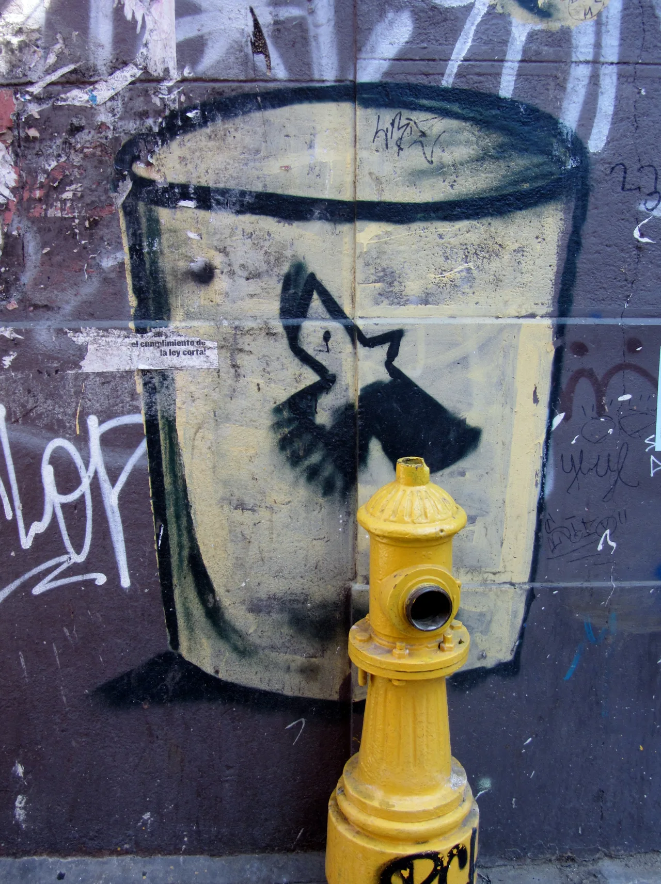
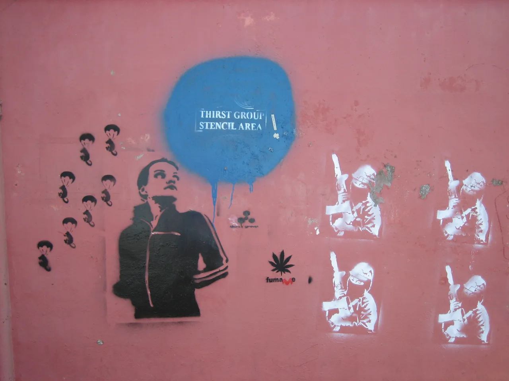

En una mesa de noche, dos jóvenes calan una radiografía vieja con una cuchilla de zapatero para fabricar la matriz que multiplicará una consigna en todos los muros del centro. Una indagación sobre el estarcido, la plantilla callejera y la velocidad de la gráfica de barricada en América Latina.
Walter Benjamin formuló a mediados de los años treinta una pregunta que sigue quemando la conciencia del arte moderno: qué ocurre con el poder político de una imagen cuando pierde su condición de pieza única e irrepetible para transformarse en una matriz capaz de multiplicarse al infinito mediante la técnica de la reproducción mecánica. Para los artistas de museo y los coleccionistas aristocráticos, la reproductibilidad técnica fue vista como una profanación que le arrebataba a la obra de arte su aura sagrada; para los movimientos populares de América Latina, en cambio, la posibilidad de multiplicar un dibujo en miles de réplicas exactas sobre el cemento de la ciudad fue el descubrimiento de un arma de combate visual que ninguna censura estatal ha logrado jamás silenciar.

El instrumento más veloz, portátil y clandestino de esa multiplicación callejera es el estarcido, conocido internacionalmente como stencil y bautizado por los muchachos de nuestras barriadas con el nombre directo de plantilla. A diferencia del muralista académico que necesita andamios, baldes de pintura y jornadas enteras de luz natural para cubrir una pared, o del grafitero de estilo que invierte quince minutos de dibujo a mano alzada para trazar una firma compleja, el operario de la plantilla trabaja con la urgencia del relámpago: su intervención en el muro dura exactamente cinco segundos.
La genealogía material de la plantilla popular en ciudades como Santiago de Chile, Bogotá, Buenos Aires o Medellín encierra una hermosa historia de reutilización médica y doméstica. En las casas de barrio nunca sobró el dinero para comprar acetatos vírgenes o planchas de mylar importadas; pero en el cajón de las medicinas de toda familia campesina o proletaria descansaban siempre varias radiografías médicas viejas: placas de tórax que mostraban costillas fracturadas, fémures astillados o pulmones fatigados por el polvo de la mina y del taller. Esas láminas de plástico grueso eran sometidas a una alquimia casera: se sumergían durante media hora en una batea de agua con cloro para disolver la emulsión de plata oscura, hasta dejarlas transparentes como un cristal flexible que no se quiebra ni se deforma con el solvente de las pinturas.
Sobre esa película transparente el dibujante fija su boceto con cinta adhesiva y emprende la faena quirúrgica del calado. La herramienta indispensable es el cúter de hoja seccionable, el bisturí de zapatero o la hoja de afeitar montada en un cabo de madera de fósforo. El corte exige una inteligencia geométrica singular que los impresores llaman el cálculo de los puentes: si se recorta una letra como la O o la A de un solo trazo continuo, el centro interior de la letra se desprendería del plástico y caería al suelo, dejando un hueco ciego; para evitarlo, el artesano debe dejar pequeñas lengüetas de plástico intacto —los puentes— que sostienen la estructura en el aire como los arcos de un acueducto romano.
La vida operativa de la plantilla comienza en la noche, en la penumbra de las marchas estudiantiles o en los callejones periféricos antes de que aclare el día de huelga general. La brigada opera en células de dos personas: una vigila la esquina y la otra lleva la radiografía doblada bajo la chaqueta y una lata de pintura en aerosol oculta en la manga. La acción tiene la coreografía fulminante de una emboscada: el ejecutor apoya la matriz contra el concreto con la mano izquierda extendida; con la derecha arroja una ráfaga corta y pareja de aerosol negro a quince centímetros de distancia; retira la plantilla con un tirón seco hacia arriba para que la pintura fresca no chorree, y guarda el plástico en el bolsillo antes de que los transeúntes alcancen a voltear la cabeza.

Cuando la sirena de la patrulla policial llega al lugar de los hechos, no encuentra culpables donde aprehender: solo encuentra sobre la pared inmaculada de un banco transnacional o sobre la valla publicitaria de un centro comercial el rostro nítido de un líder campesino asesinado, la silueta de un puño alzado o una frase lapidaria recortada en letras de imprenta: Nos quitaron tanto que terminaron quitándonos el miedo. La plantilla ha consumado su faena: la palabra prohibida ha conquistado la mirada de la calle.
Resulta profundamente fascinante observar cómo la estética del estarcido ha forjado una identidad visual propia en la memoria de las revueltas latinoamericanas contemporáneas. Al estar condicionado por los puentes y los cortes secos del bisturí, el dibujo de plantilla rechaza las medias tintas, los difuminados blandos y las sutilezas de salón: es una gráfica de alto contraste, binaria, de luz y sombra cortada a machete, que se lee con la claridad de un tiro certero desde la ventanilla de un autobús a cincuenta kilómetros por hora.
Las autoridades municipales gastan fortunas millonarias contratando brigadas de limpieza que pintan las paredes de gris municipal todas las mañanas, intentando devolver a la ciudad la asepsia pacata del orden comercial. Pero esa misma noche, en el rincón de una cocina humilde, otro joven tomará un cúter nuevo y una radiografía limpia para recortar una nueva imagen. Y mientras haya un muro ciego y una lata de pintura en la ciudad, el estarcido seguirá recordándole a los poderosos que la verdad de los pueblos no se borra con cal.
Fuentes.
- García, Silvia (2009). Imágenes de la revuelta: La gráfica callejera en las protestas sudamericanas. Metales Pesados.
- Benjamin, Walter (1936). La obra de arte en la época de su reproductibilidad técnica. Revista de Occidente.
- Reguillo, Rossana (2017). Paisajes de insurrección: Arte y protesta en el espacio público. Siglo XXI.
Investigación sobre gráfica política, arte urbano y culturas de resistencia en América Latina.
Fuentes consultadas el 19.11.2026. Análisis e interpretación: RUMMOR. Edición privada para revisión.